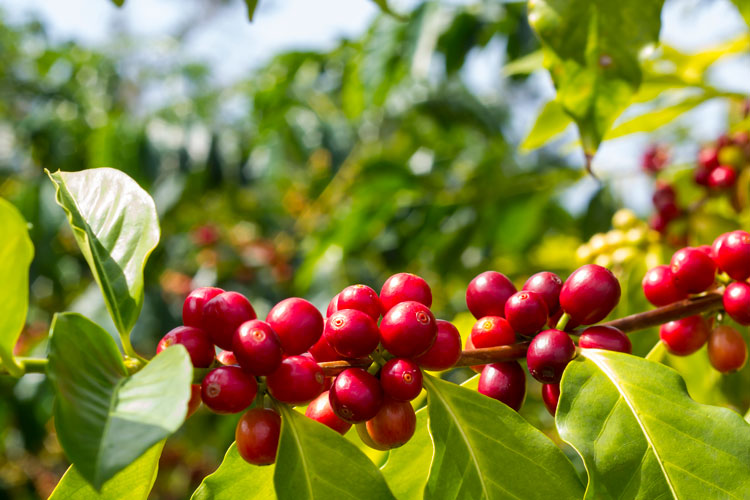

Se trata de un fruto de hueso (bayas o “cerezas” del café) de color rojo oscuro a violeta con 2 semillas que derivan de su floración blanca. Sus dos semillas están situadas una al lado de la otra en contacto por sus caras internas planas que presentan un surco
El café es una bebida que se obtiene mediante el percolado de agua caliente a través de los granos tostados y molidos de los frutos de la planta del café; es altamente estimulante por su contenido de cafeína, una sustancia psicoactiva.
La palabra «barista» tiene sus orígenes en el idioma italiano, y se refiere al profesional especializado en la elaboración de café de alta calidad.
Al igual que no es lo mismo un camarero que un coctelero, el barista es el profesional del café encargado de crear una amplia variedad de bebidas basadas en él, utilizando una gama diversa de ingredientes como leches, esencias y licores.
Además de la preparación de estas bebidas, el barista también es responsable de su presentación, a menudo complementando su trabajo con la elaboración de latte art.
Ser un buen barista requiere una combinación de experiencia teórica y práctica. Es necesario tener la capacidad de distinguir entre diferentes tipos de café, ya sea para crear mezclas o para resaltar las características únicas de un origen particular. Esto implica un profundo conocimiento sobre el proceso de tostado del café y los diversos grados de tostado existentes.
Además, el barista debe tener conocimientos sobre la calidad del agua utilizada en la preparación del café, incluyendo su dureza y pH. También debe estar familiarizado con los distintos métodos de preparación del café, que pueden incluir la utilización de cafeteras de filtro, el estilo turco, la cafetera italiana, la cafetera espresso, la prensa francesa, entre otros.
Con las cafeteras de espresso, se pueden elaborar algunas de las preparaciones de café más populares y consumidas en todo el mundo, como el café con leche, el cortado, el capuchino, el café moca, el café manchado o macchiato, el flat white, entre otros.
La historia del café es larga y fascinante, empezando en Etiopía, específicamente en la provincia de Kaffa, alrededor del siglo IX. Se cree que el descubrimiento del café fue hecho por un pastor llamado Kaldi, quien observó que sus cabras se mostraban más energéticas después de consumir los frutos de una planta. Kaldi probó los frutos y experimentó una sensación de vitalidad renovada.
Con el tiempo, el conocimiento sobre los efectos del café se extendió y comenzó a utilizarse como bebida estimulante, especialmente por monjes para poder rezar durante las vigilias nocturnas. La planta de café se cultivó y se introdujo en Yemen, donde se convirtió en un importante producto de comercio.
Desde Yemen, el café se extendió por el mundo a través del comercio, llegando a Europa, Asia y América. En Europa, el café se convirtió en una bebida popular, y las cafeterías se convirtieron en lugares de reunión social, intelectual y cultural. En América, el cultivo de café se convirtió en una importante industria, especialmente en países como Brasil, Colombia y Ecuador.